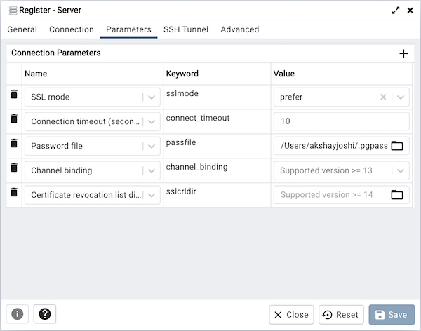
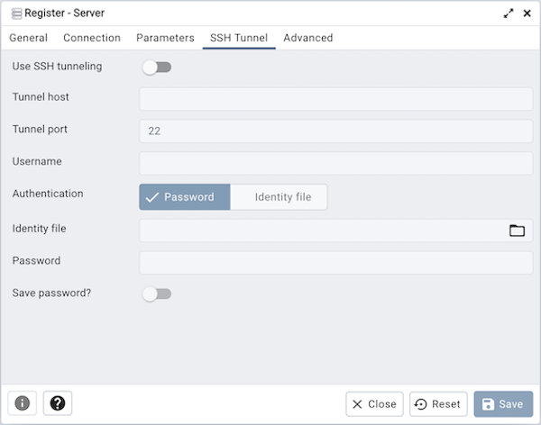
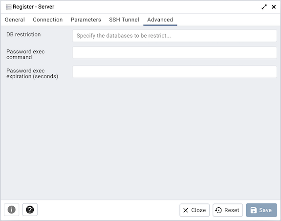

Server Dialog¶
Use the Server dialog to describe a connection to a server. Note: you must ensure that the pg_hba.conf file of the server from which you are connecting allows connections from the host of the client.

Use the fields in the General tab to identify the server:
Use the Name field to add a descriptive name for the server; the name specified will be displayed in the Browser tree control.
Use the drop-down list box in the Server group field to select the parent node for the server; the server will be displayed in the Browser tree control within the specified group.
Use the color-picker in the Background field to specify the background color for the server.
Use the color-picker in the Foreground field to specify the foreground color for the server.
If the Connect now? checkbox is checked, the client will attempt a connection to the server upon completion of the dialog; this is the default
If the Shared? switch is moved to Yes then that server can be shared with all the other users. This option is available only to admin users. For more information on users see User Management Dialog. Users can access the shared servers with some restrictions - the following operations on shared servers are not permitted:
Delete the server
Rename the server
Rename the group server
Change of host, port, and maintenance database
Please note that once the server is shared, it’s icon is changed in the browser tree.
Provide a comment about the server in the Comments field.
Click the Connection tab to continue.

Use the fields in the Connection tab to configure a connection:
Specify the IP address of the server host, or the fully qualified domain name in the Host name/address field. If you provide a unix domain socket, the directory name must begin with a “/”.
Enter the listener port number of the server host in the Port field. The default is 5432.
Use the Maintenance database field to specify the name of the initial database to which the client will connect. If you will be using pgAgent or adminpack objects, the pgAgent schema and adminpack objects should be installed on that database.
Use the Username field to specify the name of a role that will be used when authenticating with the server.
When Kerberos authentication? is set to True, pgAdmin will try to connect the PostgreSQL server using Kerberos authentication.
Use the Password field to provide a password that will be supplied when authenticating with the server.
Check the box next to Save password? to instruct pgAdmin to save the password for future use. Use Clear Saved Password to remove the saved password.
Use the Role field to specify the name of a role that has privileges that will be conveyed to the client after authentication with the server. This selection allows you to connect as one role, and then assume the permissions of this specified role after the connection is established. Note that the connecting role must be a member of the role specified.
Use the Service field to specify the service name. For more information, see Section 33.16 of the Postgres documentation.
Click the Parameters tab to continue.
Use the fields in the Parameters tab to configure a connection:
Click on the + button to add a new parameter. Some of the parameters are:
Host address using this field to specify the host IP address may save time by avoiding a DNS lookup on connection, but it may be useful to specify both a host name and address when using Kerberos, GSSAPI, or SSPI authentication methods, as well as for verify-full SSL certificate verification.
Password File field to specify the location of a password file (.pgpass). A .pgpass file allows a user to login without providing a password when they connect. For more information, see Section 33.15 of the Postgres documentation.
Connection timeout field to specify the maximum wait for connection, in seconds. Zero or not specified means wait indefinitely. It is not recommended to use a timeout of less than 2 seconds. By default it is set to 10 seconds.
SSL mode field to select the type of SSL connection the server should use. For more information about using SSL encryption, see Section 33.18 of the Postgres documentation.
If pgAdmin is installed in Server mode (the default mode), you can use the platform-specific File manager dialog to upload files that support SSL encryption to the server. To access the File manager dialog, click the icon that is located to the right of each of the following fields.
Client certificate field to specify the file containing the client SSL certificate. This file will replace the default ~/.postgresql/postgresql.crt if pgAdmin is installed in Desktop mode, and <STORAGE_DIR>/<USERNAME>/.postgresql/postgresql.crt if pgAdmin is installed in Web mode. This parameter is ignored if an SSL connection is not made.
Client certificate key field to specify the file containing the secret key used for the client certificate. This file will replace the default ~/.postgresql/postgresql.key if pgAdmin is installed in Desktop mode, and <STORAGE_DIR>/<USERNAME>/.postgresql/postgresql.key if pgAdmin is installed in Web mode. This parameter is ignored if an SSL connection is not made.
Root certificate field to specify the file containing the SSL certificate authority. This file will replace the default ~/.postgresql/root.crt. This parameter is ignored if an SSL connection is not made.
Certificate revocation list field to specify the file containing the SSL certificate revocation list. This list will replace the default list, found in ~/.postgresql/root.crl. This parameter is ignored if an SSL connection is not made.
SSL compression? is set to True, data sent over SSL connections will be compressed. The default value is False (compression is disabled). This parameter is ignored if an SSL connection is not made.
警告
In Server mode, certificates, private keys, and the revocation list are stored in the per-user file storage area on the server, which is owned by the user account under which the pgAdmin server process is run. This means that administrators of the server may be able to access those files; appropriate caution should be taken before choosing to use this feature.
Click the SSH Tunnel tab to continue.
Use the fields in the SSH Tunnel tab to configure SSH Tunneling:
You can use the “SSH Tunnel” tab to connect pgAdmin (through an intermediary proxy host) to a server that resides on a network to which the client may not be able to connect directly.
Set “Use SSH tunneling” to Yes to specify that pgAdmin should use an SSH tunnel when connecting to the specified server.
Specify the name or IP address of the SSH host (through which client connections will be forwarded) in the Tunnel host field.
Specify the port of the SSH host (through which client connections will be forwarded) in the Tunnel port field.
Specify the name of a user with login privileges for the SSH host in the Username field.
Specify the type of authentication that will be used when connecting to the SSH host in the Authentication field:
Select the Password option to specify that pgAdmin will use a password for authentication to the SSH host. This is the default.
Select the Identity file to specify that pgAdmin will use a private key file when connecting.
If the SSH host is expecting a private key file for authentication, use the Identity file field to specify the location of the key file.
If the SSH host is expecting a password of the user name or an identity file if being used, use the Password field to specify the password.
Check the box next to Save password? to instruct pgAdmin to save the password for future use. Use Clear SSH Tunnel Password to remove the saved password.
Click the Advanced tab to continue.
Use the fields in the Advanced tab to configure a connection:
Use the DB restriction field to provide a SQL restriction that will be used against the pg_database table to limit the databases that you see. For example, you might enter: live_db test_db so that only live_db and test_db are shown in the pgAdmin browser. Separate entries with a comma or tab as you type.
Use the Password exec command field to specify a shell command to be executed to retrieve a password to be used for SQL authentication. The
stdoutof the command will be used as the SQL password. This may be useful when the password should be generated as a transient authorization token instead of providing a password when connecting in PAM authentication scenarios.Use the Password exec expiration field to specify a maximum age, in seconds, of the password generated with a Password exec command. If not specified, the password will not expire until your pgAdmin session does. Zero means the command will be executed for each new connection or reconnection that is made. If the generated password is not valid indefinitely, set this value to slightly before it will expire.
备注
The password file option is only supported when pgAdmin is using libpq v10.0 or later to connect to the server.
备注
The Password exec option is only supported when pgAdmin is run in desktop mode.
Click the Save button to save your work.
Click the Close button to exit without saving your work.
Click the Reset button to return the values specified on the Server dialog to their original condition.